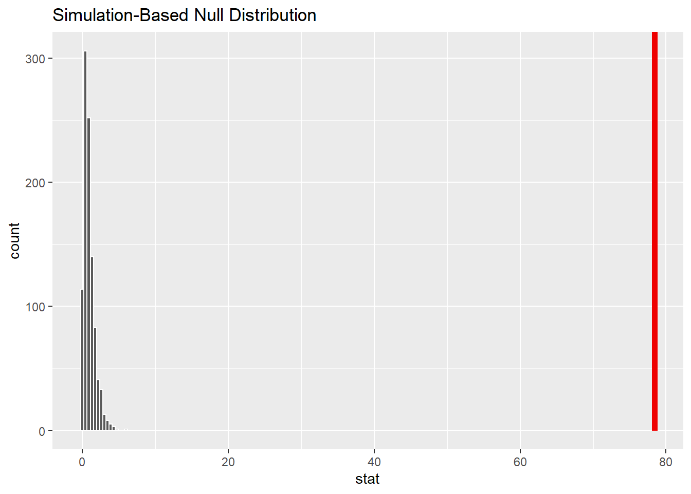
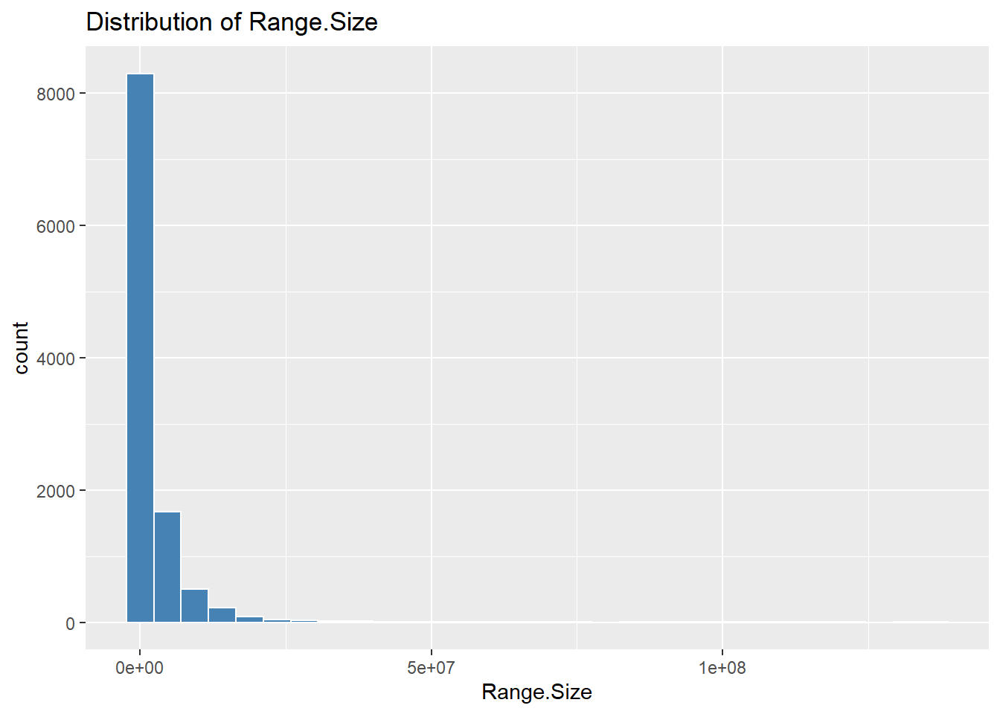
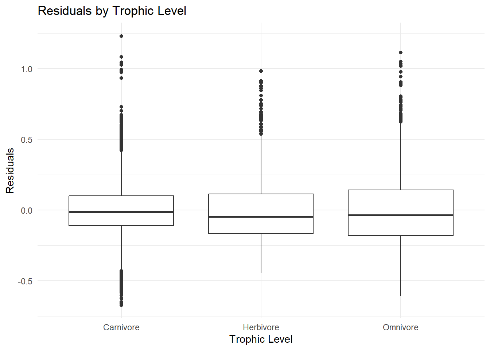

1 + 1[1] 2Quarto enables you to weave together content and executable code into a finished document. To learn more about Quarto see https://quarto.org.
When you click the Render button a document will be generated that includes both content and the output of embedded code. You can embed code like this:
1 + 1[1] 2Challenge 1: One-Factor ANOVA and Inference
library(tidyverse)Warning: package 'ggplot2' was built under R version 4.4.3Warning: package 'purrr' was built under R version 4.4.3── Attaching core tidyverse packages ──────────────────────── tidyverse 2.0.0 ──
✔ dplyr 1.1.4 ✔ readr 2.1.5
✔ forcats 1.0.0 ✔ stringr 1.5.1
✔ ggplot2 3.5.1 ✔ tibble 3.2.1
✔ lubridate 1.9.4 ✔ tidyr 1.3.1
✔ purrr 1.0.4
── Conflicts ────────────────────────────────────────── tidyverse_conflicts() ──
✖ dplyr::filter() masks stats::filter()
✖ dplyr::lag() masks stats::lag()
ℹ Use the conflicted package (<http://conflicted.r-lib.org/>) to force all conflicts to become errorslibrary(skimr) Warning: package 'skimr' was built under R version 4.4.3d <- read_csv("C:/Users/britt/OneDrive/Documents/ADA/Development/repos/Exercise11/AVONETdataset1.csv")Rows: 11009 Columns: 37
── Column specification ────────────────────────────────────────────────────────
Delimiter: ","
chr (13): Species1, Family1, Order1, Avibase.ID1, Mass.Source, Mass.Refs.Oth...
dbl (24): Sequence, Total.individuals, Female, Male, Unknown, Complete.measu...
ℹ Use `spec()` to retrieve the full column specification for this data.
ℹ Specify the column types or set `show_col_types = FALSE` to quiet this message.skim(d) | Name | d |
| Number of rows | 11009 |
| Number of columns | 37 |
| _______________________ | |
| Column type frequency: | |
| character | 13 |
| numeric | 24 |
| ________________________ | |
| Group variables | None |
Variable type: character
| skim_variable | n_missing | complete_rate | min | max | empty | n_unique | whitespace |
|---|---|---|---|---|---|---|---|
| Species1 | 0 | 1.00 | 9 | 36 | 0 | 11009 | 0 |
| Family1 | 0 | 1.00 | 7 | 18 | 0 | 243 | 0 |
| Order1 | 0 | 1.00 | 10 | 19 | 0 | 36 | 0 |
| Avibase.ID1 | 0 | 1.00 | 16 | 16 | 0 | 11009 | 0 |
| Mass.Source | 0 | 1.00 | 7 | 19 | 0 | 8 | 0 |
| Mass.Refs.Other | 10294 | 0.06 | 3 | 31 | 0 | 44 | 0 |
| Inference | 0 | 1.00 | 2 | 3 | 0 | 2 | 0 |
| Traits.inferred | 10140 | 0.08 | 9 | 145 | 0 | 47 | 0 |
| Reference.species | 10140 | 0.08 | 9 | 29 | 0 | 706 | 0 |
| Habitat | 98 | 0.99 | 4 | 14 | 0 | 11 | 0 |
| Trophic.Level | 5 | 1.00 | 8 | 9 | 0 | 4 | 0 |
| Trophic.Niche | 10 | 1.00 | 8 | 21 | 0 | 10 | 0 |
| Primary.Lifestyle | 0 | 1.00 | 6 | 11 | 0 | 5 | 0 |
Variable type: numeric
| skim_variable | n_missing | complete_rate | mean | sd | p0 | p25 | p50 | p75 | p100 | hist |
|---|---|---|---|---|---|---|---|---|---|---|
| Sequence | 10 | 1.00 | 5595.71 | 3215.42 | 1.00 | 2829.50 | 5604.00 | 8372.50 | 11158.00 | ▇▇▇▇▇ |
| Total.individuals | 0 | 1.00 | 8.14 | 14.90 | 0.00 | 4.00 | 5.00 | 9.00 | 784.00 | ▇▁▁▁▁ |
| Female | 0 | 1.00 | 2.74 | 4.08 | 0.00 | 1.00 | 2.00 | 3.00 | 182.00 | ▇▁▁▁▁ |
| Male | 0 | 1.00 | 4.11 | 5.95 | 0.00 | 2.00 | 3.00 | 5.00 | 251.00 | ▇▁▁▁▁ |
| Unknown | 0 | 1.00 | 1.29 | 8.31 | 0.00 | 0.00 | 0.00 | 1.00 | 400.00 | ▇▁▁▁▁ |
| Complete.measures | 0 | 1.00 | 4.14 | 3.04 | 0.00 | 4.00 | 4.00 | 4.00 | 101.00 | ▇▁▁▁▁ |
| Beak.Length_Culmen | 0 | 1.00 | 26.36 | 24.39 | 4.50 | 14.70 | 19.90 | 28.50 | 414.20 | ▇▁▁▁▁ |
| Beak.Length_Nares | 0 | 1.00 | 17.06 | 20.10 | 1.60 | 8.50 | 11.70 | 18.00 | 389.80 | ▇▁▁▁▁ |
| Beak.Width | 0 | 1.00 | 6.58 | 5.15 | 0.70 | 3.60 | 5.00 | 7.70 | 88.90 | ▇▁▁▁▁ |
| Beak.Depth | 0 | 1.00 | 8.06 | 7.59 | 1.00 | 3.80 | 5.80 | 9.40 | 110.90 | ▇▁▁▁▁ |
| Tarsus.Length | 0 | 1.00 | 28.73 | 24.84 | 2.50 | 17.40 | 22.00 | 31.30 | 481.20 | ▇▁▁▁▁ |
| Wing.Length | 0 | 1.00 | 124.78 | 93.44 | 0.10 | 66.80 | 91.50 | 145.50 | 789.90 | ▇▂▁▁▁ |
| Kipps.Distance | 0 | 1.00 | 36.92 | 45.21 | 0.10 | 10.90 | 19.50 | 43.40 | 419.00 | ▇▁▁▁▁ |
| Secondary1 | 0 | 1.00 | 87.75 | 58.00 | 0.10 | 53.30 | 70.30 | 100.40 | 629.10 | ▇▁▁▁▁ |
| Hand-Wing.Index | 0 | 1.00 | 25.44 | 14.85 | 0.10 | 15.20 | 21.00 | 31.50 | 74.30 | ▃▇▂▁▁ |
| Tail.Length | 0 | 1.00 | 86.65 | 61.08 | 0.10 | 50.20 | 68.70 | 99.90 | 812.80 | ▇▁▁▁▁ |
| Mass | 0 | 1.00 | 267.15 | 1883.03 | 1.90 | 15.00 | 35.50 | 121.00 | 111000.00 | ▇▁▁▁▁ |
| Habitat.Density | 0 | 1.00 | 1.74 | 0.78 | 1.00 | 1.00 | 2.00 | 2.00 | 3.00 | ▇▁▆▁▃ |
| Migration | 23 | 1.00 | 1.29 | 0.62 | 1.00 | 1.00 | 1.00 | 1.00 | 3.00 | ▇▁▁▁▁ |
| Min.Latitude | 57 | 0.99 | -6.44 | 22.37 | -85.58 | -21.22 | -7.15 | 8.07 | 68.08 | ▁▃▇▃▁ |
| Max.Latitude | 57 | 0.99 | 11.51 | 23.32 | -65.12 | -3.33 | 9.00 | 22.07 | 85.01 | ▁▃▇▂▁ |
| Centroid.Latitude | 57 | 0.99 | 2.95 | 22.07 | -71.04 | -9.73 | -0.22 | 15.28 | 78.43 | ▁▃▇▂▁ |
| Centroid.Longitude | 59 | 0.99 | 18.51 | 88.05 | -178.41 | -68.11 | 22.30 | 105.44 | 179.81 | ▁▇▃▅▅ |
| Range.Size | 57 | 0.99 | 2578859.38 | 7629310.06 | 0.88 | 54052.87 | 416076.61 | 2187040.21 | 136304432.20 | ▇▁▁▁▁ |
d <- d %>%
mutate(Migration = as.factor(Migration))
d %>%
filter(!is.na(Trophic.Level)) %>%
ggplot(aes(x = Trophic.Level, y = log(Mass))) +
geom_boxplot() +
labs(
title = "Log(Mass) by Trophic Level",
x = "Trophic Level",
y = "Log(Mass)"
) +
theme_minimal()d %>%
filter(!is.na(Migration)) %>%
ggplot(aes(x = Migration, y = log(Mass))) +
geom_boxplot() +
labs(
title = "Log(Mass) by Migration Behavior",
x = "Migration Type",
y = "Log(Mass)"
) +
theme_minimal()model_trophic <- lm(log(Mass) ~ Trophic.Level, data = d)
summary(model_trophic)
Call:
lm(formula = log(Mass) ~ Trophic.Level, data = d)
Residuals:
Min 1Q Median 3Q Max
-3.4229 -1.1551 -0.3028 0.8982 7.5526
Coefficients:
Estimate Std. Error t value Pr(>|t|)
(Intercept) 3.80834 0.01967 193.632 < 2e-16 ***
Trophic.LevelHerbivore 0.25639 0.03406 7.528 5.54e-14 ***
Trophic.LevelOmnivore 0.01422 0.04116 0.345 0.73
Trophic.LevelScavenger 4.63189 0.34447 13.446 < 2e-16 ***
---
Signif. codes: 0 '***' 0.001 '**' 0.01 '*' 0.05 '.' 0.1 ' ' 1
Residual standard error: 1.538 on 11000 degrees of freedom
(5 observations deleted due to missingness)
Multiple R-squared: 0.02094, Adjusted R-squared: 0.02067
F-statistic: 78.42 on 3 and 11000 DF, p-value: < 2.2e-16d <- d %>%
mutate(Migration = as.factor(Migration))
model_migration <- lm(log(Mass) ~ Migration, data = d)
summary(model_migration)
Call:
lm(formula = log(Mass) ~ Migration, data = d)
Residuals:
Min 1Q Median 3Q Max
-3.8924 -1.1769 -0.3088 0.9152 7.8427
Coefficients:
Estimate Std. Error t value Pr(>|t|)
(Intercept) 3.77457 0.01636 230.710 < 2e-16 ***
Migration2 0.75971 0.04731 16.059 < 2e-16 ***
Migration3 0.37647 0.05155 7.303 3.02e-13 ***
---
Signif. codes: 0 '***' 0.001 '**' 0.01 '*' 0.05 '.' 0.1 ' ' 1
Residual standard error: 1.535 on 10983 degrees of freedom
(23 observations deleted due to missingness)
Multiple R-squared: 0.02563, Adjusted R-squared: 0.02546
F-statistic: 144.5 on 2 and 10983 DF, p-value: < 2.2e-16anova_migration <- aov(log(Mass) ~ Migration, data = d)
TukeyHSD(anova_migration) Tukey multiple comparisons of means
95% family-wise confidence level
Fit: aov(formula = log(Mass) ~ Migration, data = d)
$Migration
diff lwr upr p adj
2-1 0.7597067 0.6488157 0.8705977 0
3-1 0.3764693 0.2556282 0.4973105 0
3-2 -0.3832374 -0.5380211 -0.2284536 0library(infer)Warning: package 'infer' was built under R version 4.4.3d_clean <- d %>%
filter(!is.na(Trophic.Level), !is.na(Mass)) %>%
mutate(log_Mass = log(Mass))
observed_stat <- d_clean %>%
specify(log_Mass ~ Trophic.Level) %>%
calculate(stat = "F")
null_dist <- d_clean %>%
specify(log_Mass ~ Trophic.Level) %>%
hypothesize(null = "independence") %>%
generate(reps = 1000, type = "permute") %>%
calculate(stat = "F")
p_val <- null_dist %>%
get_p_value(obs_stat = observed_stat, direction = "greater")Warning: Please be cautious in reporting a p-value of 0. This result is an approximation
based on the number of `reps` chosen in the `generate()` step.
ℹ See `get_p_value()` (`?infer::get_p_value()`) for more information.p_val# A tibble: 1 × 1
p_value
<dbl>
1 0visualize(null_dist) +
shade_p_value(obs_stat = observed_stat, direction = "greater")
Is mass associated with either trophic level or migration?
Is the F statistic large enough to reject the null hypothesis of an F value of zero?
Which migration category(ies) are different from the reference level? What level is the reference level? Re-level and assess differences among the remaining pair of Migration categories.
Which Migration categories differ?
Challenge 2
library(tidyverse)
library(skimr)
library(infer)
d <- read_csv("C:/Users/britt/OneDrive/Documents/ADA/Development/repos/Exercise11/AVONETdataset1.csv")Rows: 11009 Columns: 37
── Column specification ────────────────────────────────────────────────────────
Delimiter: ","
chr (13): Species1, Family1, Order1, Avibase.ID1, Mass.Source, Mass.Refs.Oth...
dbl (24): Sequence, Total.individuals, Female, Male, Unknown, Complete.measu...
ℹ Use `spec()` to retrieve the full column specification for this data.
ℹ Specify the column types or set `show_col_types = FALSE` to quiet this message.skim(d)| Name | d |
| Number of rows | 11009 |
| Number of columns | 37 |
| _______________________ | |
| Column type frequency: | |
| character | 13 |
| numeric | 24 |
| ________________________ | |
| Group variables | None |
Variable type: character
| skim_variable | n_missing | complete_rate | min | max | empty | n_unique | whitespace |
|---|---|---|---|---|---|---|---|
| Species1 | 0 | 1.00 | 9 | 36 | 0 | 11009 | 0 |
| Family1 | 0 | 1.00 | 7 | 18 | 0 | 243 | 0 |
| Order1 | 0 | 1.00 | 10 | 19 | 0 | 36 | 0 |
| Avibase.ID1 | 0 | 1.00 | 16 | 16 | 0 | 11009 | 0 |
| Mass.Source | 0 | 1.00 | 7 | 19 | 0 | 8 | 0 |
| Mass.Refs.Other | 10294 | 0.06 | 3 | 31 | 0 | 44 | 0 |
| Inference | 0 | 1.00 | 2 | 3 | 0 | 2 | 0 |
| Traits.inferred | 10140 | 0.08 | 9 | 145 | 0 | 47 | 0 |
| Reference.species | 10140 | 0.08 | 9 | 29 | 0 | 706 | 0 |
| Habitat | 98 | 0.99 | 4 | 14 | 0 | 11 | 0 |
| Trophic.Level | 5 | 1.00 | 8 | 9 | 0 | 4 | 0 |
| Trophic.Niche | 10 | 1.00 | 8 | 21 | 0 | 10 | 0 |
| Primary.Lifestyle | 0 | 1.00 | 6 | 11 | 0 | 5 | 0 |
Variable type: numeric
| skim_variable | n_missing | complete_rate | mean | sd | p0 | p25 | p50 | p75 | p100 | hist |
|---|---|---|---|---|---|---|---|---|---|---|
| Sequence | 10 | 1.00 | 5595.71 | 3215.42 | 1.00 | 2829.50 | 5604.00 | 8372.50 | 11158.00 | ▇▇▇▇▇ |
| Total.individuals | 0 | 1.00 | 8.14 | 14.90 | 0.00 | 4.00 | 5.00 | 9.00 | 784.00 | ▇▁▁▁▁ |
| Female | 0 | 1.00 | 2.74 | 4.08 | 0.00 | 1.00 | 2.00 | 3.00 | 182.00 | ▇▁▁▁▁ |
| Male | 0 | 1.00 | 4.11 | 5.95 | 0.00 | 2.00 | 3.00 | 5.00 | 251.00 | ▇▁▁▁▁ |
| Unknown | 0 | 1.00 | 1.29 | 8.31 | 0.00 | 0.00 | 0.00 | 1.00 | 400.00 | ▇▁▁▁▁ |
| Complete.measures | 0 | 1.00 | 4.14 | 3.04 | 0.00 | 4.00 | 4.00 | 4.00 | 101.00 | ▇▁▁▁▁ |
| Beak.Length_Culmen | 0 | 1.00 | 26.36 | 24.39 | 4.50 | 14.70 | 19.90 | 28.50 | 414.20 | ▇▁▁▁▁ |
| Beak.Length_Nares | 0 | 1.00 | 17.06 | 20.10 | 1.60 | 8.50 | 11.70 | 18.00 | 389.80 | ▇▁▁▁▁ |
| Beak.Width | 0 | 1.00 | 6.58 | 5.15 | 0.70 | 3.60 | 5.00 | 7.70 | 88.90 | ▇▁▁▁▁ |
| Beak.Depth | 0 | 1.00 | 8.06 | 7.59 | 1.00 | 3.80 | 5.80 | 9.40 | 110.90 | ▇▁▁▁▁ |
| Tarsus.Length | 0 | 1.00 | 28.73 | 24.84 | 2.50 | 17.40 | 22.00 | 31.30 | 481.20 | ▇▁▁▁▁ |
| Wing.Length | 0 | 1.00 | 124.78 | 93.44 | 0.10 | 66.80 | 91.50 | 145.50 | 789.90 | ▇▂▁▁▁ |
| Kipps.Distance | 0 | 1.00 | 36.92 | 45.21 | 0.10 | 10.90 | 19.50 | 43.40 | 419.00 | ▇▁▁▁▁ |
| Secondary1 | 0 | 1.00 | 87.75 | 58.00 | 0.10 | 53.30 | 70.30 | 100.40 | 629.10 | ▇▁▁▁▁ |
| Hand-Wing.Index | 0 | 1.00 | 25.44 | 14.85 | 0.10 | 15.20 | 21.00 | 31.50 | 74.30 | ▃▇▂▁▁ |
| Tail.Length | 0 | 1.00 | 86.65 | 61.08 | 0.10 | 50.20 | 68.70 | 99.90 | 812.80 | ▇▁▁▁▁ |
| Mass | 0 | 1.00 | 267.15 | 1883.03 | 1.90 | 15.00 | 35.50 | 121.00 | 111000.00 | ▇▁▁▁▁ |
| Habitat.Density | 0 | 1.00 | 1.74 | 0.78 | 1.00 | 1.00 | 2.00 | 2.00 | 3.00 | ▇▁▆▁▃ |
| Migration | 23 | 1.00 | 1.29 | 0.62 | 1.00 | 1.00 | 1.00 | 1.00 | 3.00 | ▇▁▁▁▁ |
| Min.Latitude | 57 | 0.99 | -6.44 | 22.37 | -85.58 | -21.22 | -7.15 | 8.07 | 68.08 | ▁▃▇▃▁ |
| Max.Latitude | 57 | 0.99 | 11.51 | 23.32 | -65.12 | -3.33 | 9.00 | 22.07 | 85.01 | ▁▃▇▂▁ |
| Centroid.Latitude | 57 | 0.99 | 2.95 | 22.07 | -71.04 | -9.73 | -0.22 | 15.28 | 78.43 | ▁▃▇▂▁ |
| Centroid.Longitude | 59 | 0.99 | 18.51 | 88.05 | -178.41 | -68.11 | 22.30 | 105.44 | 179.81 | ▁▇▃▅▅ |
| Range.Size | 57 | 0.99 | 2578859.38 | 7629310.06 | 0.88 | 54052.87 | 416076.61 | 2187040.21 | 136304432.20 | ▇▁▁▁▁ |
d <- d %>%
filter(!is.na(Mass), !is.na(Beak.Length_Culmen), !is.na(Tarsus.Length)) %>%
mutate(log_Mass = log(Mass))
beak_model <- lm(log(Beak.Length_Culmen) ~ log_Mass, data = d)
d$Rel_Beak_Length <- resid(beak_model)
tarsus_model <- lm(log(Tarsus.Length) ~ log_Mass, data = d)
d$Rel_Tarsus_Length <- resid(tarsus_model)
d %>%
filter(!is.na(Primary.Lifestyle)) %>%
ggplot(aes(x = Primary.Lifestyle, y = Rel_Tarsus_Length)) +
geom_boxplot() +
labs(
title = "Relative Tarsus Length by Primary Lifestyle",
x = "Primary Lifestyle",
y = "Relative Tarsus Length"
) +
theme_minimal() +
theme(axis.text.x = element_text(angle = 45, hjust = 1))d %>%
filter(!is.na(Trophic.Niche)) %>%
ggplot(aes(x = Trophic.Niche, y = Rel_Beak_Length)) +
geom_boxplot() +
labs(
title = "Relative Beak Length by Trophic Niche",
x = "Trophic Niche",
y = "Relative Beak Length"
) +
theme_minimal() +
theme(axis.text.x = element_text(angle = 45, hjust = 1))d_clean <- d %>%
filter(!is.na(Migration), !is.na(Range.Size)) %>%
mutate(Migration = as.factor(Migration))
ggplot(d_clean, aes(x = Range.Size)) +
geom_histogram(bins = 30, fill = "steelblue", color = "white") +
labs(title = "Distribution of Range.Size")
ggplot(d_clean, aes(x = log(Range.Size))) +
geom_histogram(bins = 30, fill = "darkgreen", color = "white") +
labs(title = "Distribution of log(Range.Size)")anova_model <- aov(log(Range.Size) ~ Migration, data = d_clean)
anova_summary <- summary(anova_model)
ss_total <- sum(anova_summary[[1]]$`Sum Sq`)
ss_migration <- anova_summary[[1]]$`Sum Sq`[1]
r_squared <- ss_migration / ss_total
r_squared[1] 0.0869031model_mig_range <- lm(log(Range.Size) ~ Migration, data = d_clean)
summary(model_mig_range)
Call:
lm(formula = log(Range.Size) ~ Migration, data = d_clean)
Residuals:
Min 1Q Median 3Q Max
-14.5710 -1.4521 0.4357 1.9763 5.9271
Coefficients:
Estimate Std. Error t value Pr(>|t|)
(Intercept) 12.03381 0.02974 404.62 <2e-16 ***
Migration2 1.78469 0.08606 20.74 <2e-16 ***
Migration3 2.51702 0.09380 26.83 <2e-16 ***
---
Signif. codes: 0 '***' 0.001 '**' 0.01 '*' 0.05 '.' 0.1 ' ' 1
Residual standard error: 2.785 on 10934 degrees of freedom
Multiple R-squared: 0.0869, Adjusted R-squared: 0.08674
F-statistic: 520.3 on 2 and 10934 DF, p-value: < 2.2e-16d_clean <- d_clean %>%
mutate(Migration = relevel(Migration, ref = "2"))
model_mig_range2 <- lm(log(Range.Size) ~ Migration, data = d_clean)
summary(model_mig_range2)
Call:
lm(formula = log(Range.Size) ~ Migration, data = d_clean)
Residuals:
Min 1Q Median 3Q Max
-14.5710 -1.4521 0.4357 1.9763 5.9271
Coefficients:
Estimate Std. Error t value Pr(>|t|)
(Intercept) 13.81850 0.08076 171.099 < 2e-16 ***
Migration1 -1.78469 0.08606 -20.737 < 2e-16 ***
Migration3 0.73233 0.12015 6.095 1.13e-09 ***
---
Signif. codes: 0 '***' 0.001 '**' 0.01 '*' 0.05 '.' 0.1 ' ' 1
Residual standard error: 2.785 on 10934 degrees of freedom
Multiple R-squared: 0.0869, Adjusted R-squared: 0.08674
F-statistic: 520.3 on 2 and 10934 DF, p-value: < 2.2e-16anova_mig_range <- aov(log(Range.Size) ~ Migration, data = d_clean)
TukeyHSD(anova_mig_range) Tukey multiple comparisons of means
95% family-wise confidence level
Fit: aov(formula = log(Range.Size) ~ Migration, data = d_clean)
$Migration
diff lwr upr p adj
1-2 -1.7846901 -1.986428 -1.582952 0
3-2 0.7323266 0.450689 1.013964 0
3-1 2.5170168 2.297150 2.736883 0pass_d <- d %>%
filter(Order1 == "Passeriformes")
ggplot(pass_d, aes(x = Primary.Lifestyle, y = Rel_Beak_Length)) +
geom_boxplot() +
labs(title = "Relative Beak Length by Primary Lifestyle (Passeriformes)",
x = "Primary Lifestyle", y = "Relative Beak Length") +
theme_minimal() +
theme(axis.text.x = element_text(angle = 45, hjust = 1))ggplot(pass_d, aes(x = Trophic.Level, y = Rel_Beak_Length)) +
geom_boxplot() +
labs(title = "Relative Beak Length by Trophic Level (Passeriformes)",
x = "Trophic Level", y = "Relative Beak Length") +
theme_minimal()ggplot(pass_d, aes(x = Primary.Lifestyle, y = Rel_Beak_Length, fill = Trophic.Level)) +
geom_boxplot(position = position_dodge()) +
labs(title = "Relative Beak Length by Lifestyle and Trophic Level",
x = "Primary Lifestyle", y = "Relative Beak Length") +
theme_minimal() +
theme(axis.text.x = element_text(angle = 45, hjust = 1))model_lifestyle <- aov(Rel_Beak_Length ~ Primary.Lifestyle, data = pass_d)
summary(model_lifestyle) Df Sum Sq Mean Sq F value Pr(>F)
Primary.Lifestyle 3 18.2 6.067 130.2 <2e-16 ***
Residuals 6610 307.9 0.047
---
Signif. codes: 0 '***' 0.001 '**' 0.01 '*' 0.05 '.' 0.1 ' ' 1model_trophic <- aov(Rel_Beak_Length ~ Trophic.Level, data = pass_d)
summary(model_trophic) Df Sum Sq Mean Sq F value Pr(>F)
Trophic.Level 2 16.31 8.154 174 <2e-16 ***
Residuals 6611 309.81 0.047
---
Signif. codes: 0 '***' 0.001 '**' 0.01 '*' 0.05 '.' 0.1 ' ' 1model_two_factor <- aov(Rel_Beak_Length ~ Primary.Lifestyle + Trophic.Level, data = pass_d)
summary(model_two_factor) Df Sum Sq Mean Sq F value Pr(>F)
Primary.Lifestyle 3 18.20 6.067 138.1 <2e-16 ***
Trophic.Level 2 17.68 8.838 201.2 <2e-16 ***
Residuals 6608 290.24 0.044
---
Signif. codes: 0 '***' 0.001 '**' 0.01 '*' 0.05 '.' 0.1 ' ' 1model_interaction <- aov(Rel_Beak_Length ~ Primary.Lifestyle + Trophic.Level + Primary.Lifestyle:Trophic.Level, data = pass_d)
summary(model_interaction) Df Sum Sq Mean Sq F value Pr(>F)
Primary.Lifestyle 3 18.20 6.067 142.15 <2e-16 ***
Trophic.Level 2 17.68 8.838 207.11 <2e-16 ***
Primary.Lifestyle:Trophic.Level 4 8.41 2.102 49.26 <2e-16 ***
Residuals 6604 281.83 0.043
---
Signif. codes: 0 '***' 0.001 '**' 0.01 '*' 0.05 '.' 0.1 ' ' 1anova(model_two_factor, model_interaction)Analysis of Variance Table
Model 1: Rel_Beak_Length ~ Primary.Lifestyle + Trophic.Level
Model 2: Rel_Beak_Length ~ Primary.Lifestyle + Trophic.Level + Primary.Lifestyle:Trophic.Level
Res.Df RSS Df Sum of Sq F Pr(>F)
1 6608 290.24
2 6604 281.83 4 8.4093 49.263 < 2.2e-16 ***
---
Signif. codes: 0 '***' 0.001 '**' 0.01 '*' 0.05 '.' 0.1 ' ' 1interaction.plot(
x.factor = pass_d$Trophic.Level,
trace.factor = pass_d$Primary.Lifestyle,
response = pass_d$Rel_Beak_Length,
fun = mean,
type = "b",
legend = TRUE,
xlab = "Trophic Level",
ylab = "Mean Relative Beak Length",
trace.label = "Primary Lifestyle",
col = rainbow(length(unique(pass_d$Primary.Lifestyle))),
lty = 1,
pch = 16,
main = "Interaction Plot: Relative Beak Length"
)group_sds <- pass_d %>%
group_by(Trophic.Level) %>%
summarise(
n = n(),
sd_beak = sd(Rel_Beak_Length, na.rm = TRUE)
)
max(group_sds$sd_beak) / min(group_sds$sd_beak) < 2[1] TRUEmodel <- aov(Rel_Beak_Length ~ Trophic.Level, data = pass_d)
residuals <- resid(model)
fitted <- fitted(model)
hist(residuals, main = "Histogram of Residuals", xlab = "Residuals")qqnorm(residuals)
qqline(residuals, col = "red")pass_d$resid <- residuals(model)
ggplot(pass_d, aes(x = Trophic.Level, y = resid)) +
geom_boxplot() +
labs(title = "Residuals by Trophic Level", y = "Residuals", x = "Trophic Level") +
theme_minimal()
pass_d %>%
count(Trophic.Level)# A tibble: 3 × 2
Trophic.Level n
<chr> <int>
1 Carnivore 3824
2 Herbivore 1297
3 Omnivore 1493d_clean <- d %>%
filter(!is.na(Trophic.Level), !is.na(Mass)) %>%
mutate(log_Mass = log(Mass))
observed_stat <- d_clean %>%
specify(log_Mass ~ Trophic.Level) %>%
calculate(stat = "F")
null_dist <- d_clean %>%
specify(log_Mass ~ Trophic.Level) %>%
hypothesize(null = "independence") %>%
generate(reps = 1000, type = "permute") %>%
calculate(stat = "F")
p_val <- null_dist %>%
get_p_value(obs_stat = observed_stat, direction = "greater")Warning: Please be cautious in reporting a p-value of 0. This result is an approximation
based on the number of `reps` chosen in the `generate()` step.
ℹ See `get_p_value()` (`?infer::get_p_value()`) for more information.p_val# A tibble: 1 × 1
p_value
<dbl>
1 0visualize(null_dist) +
shade_p_value(obs_stat = observed_stat, direction = "greater")Challenge 2 Questions: Data Wrangling + One- and Two-Factor ANOVA
What would you conclude about how relative beak length is related to these two variables?
What would you now conclude about how relative beak length is related to these two variables?